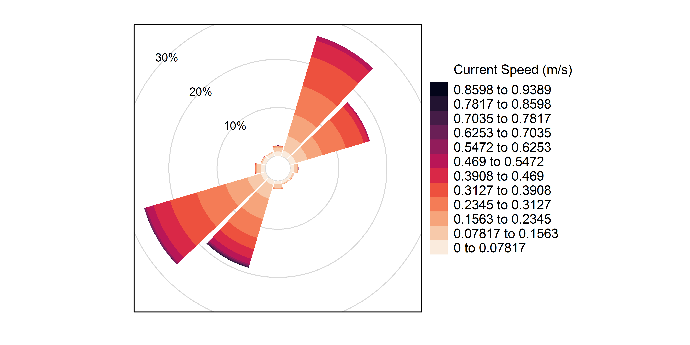

Format and visualize Current data collect by Acoustic Current Doppler Profilers (ADCPs).
Installation
You can install the development version of adcp from GitHub with:
# install.packages("devtools")
devtools::install_github("dempsey-CMAR/adcp")Background
The Centre for Marine Applied Research (CMAR) coordinates an extensive Coastal Monitoring Program to measure Essential Ocean Variables from around the coast of Nova Scotia, Canada. There are three main branches of the program: Water Quality, Currents, and Waves. Processed data for each branch can be viewed and downloaded from several sources, as outlined in the CMAR Report & Data Access Cheat Sheet (download for clickable links).
The adcp package is used to format and visualize data from the Current branch of the Coastal Monitoring Program.
Current data is collected with Acoustic Doppler Current Profilers (ADCPs) deployed on the seafloor. An ADCP is a hydroacoustic current meter that measures water velocities over a range of depths. These sensors measure soundwaves scattered back from moving particles in the water column and use the Doppler effect to estimate speed and direction (Figure 1).

Figure 1: ADCP diagram (not to scale).
Current data is recorded for vertical bins throughout the water column. The adcp package uses data from the sensor configuration to calculate the bin height above sea floor and the bin depth below the surface (Figure 2). Note that the bin height always refers to the same point in space; the same bin depth can refer to different points due to changing tides.
Figure 2: The bin height above the sea floor and the bin depth below the surface are calculated from deployment configurations including the sensor depth, sensor height above the sea floor, first bin range, and bin size.
Example
Consider an ADCP deployed from January 17, 2019 to March 1, 2019 at Long Beach, St. Mary’s Bay.
The raw .txt file looks like this:

Figure 3: Raw ADCP data file for Long Beach.
Import and format data
adcp_read_txt reads in the .txt file and applies some formatting. There is a column for the timestamp, ensemble number, and variable measured. Additional columns, labelled V8 to Vn hold the measurements for each bin.
path <- system.file("testdata", package = "adcp")
# deployment metadata from tracking sheet
metadata <- tibble(
Depl_ID = "DG009",
Waterbody = "St. Mary's Bay",
Station_Name = "Long Beach",
Inst_Altitude = 0.5,
Bin_Size = 1,
First_Bin_Range = 1
)
dat <- adcp_read_txt(path, "2019-01-17_Long_Beach.txt")
head(dat)
#> timestamp_ns Num variable V8 V9 V10 V11 V12 V13 V14 V15 V16
#> 1 2019-01-17 10:40:00 17 SensorDepth 0.16 NA NA NA NA NA NA NA NA
#> 2 2019-01-17 10:40:00 17 WaterSpeed NA NA NA NA NA NA NA NA NA
#> 3 2019-01-17 10:40:00 17 WaterDirection NA NA NA NA NA NA NA NA NA
#> 4 2019-01-17 10:50:00 18 SensorDepth 0.16 NA NA NA NA NA NA NA NA
#> 5 2019-01-17 10:50:00 18 WaterSpeed NA NA NA NA NA NA NA NA NA
#> 6 2019-01-17 10:50:00 18 WaterDirection NA NA NA NA NA NA NA NA NA
#> V17 V18 V19 V20 V21 V22 V23 V24 V25 V26 V27 V28 V29 V30 V31 V32 V33 V34 V35
#> 1 NA NA NA NA NA NA NA NA NA NA NA NA NA NA NA NA NA NA NA
#> 2 NA NA NA NA NA NA NA NA NA NA NA NA NA NA NA NA NA NA NA
#> 3 NA NA NA NA NA NA NA NA NA NA NA NA NA NA NA NA NA NA NA
#> 4 NA NA NA NA NA NA NA NA NA NA NA NA NA NA NA NA NA NA NA
#> 5 NA NA NA NA NA NA NA NA NA NA NA NA NA NA NA NA NA NA NA
#> 6 NA NA NA NA NA NA NA NA NA NA NA NA NA NA NA NA NA NA NA
#> V36 V37 V38 V39 V40 V41 V42 V43 V44 V45 V46 V47 V48 V49 V50 V51 V52 V53 V54
#> 1 NA NA NA NA NA NA NA NA NA NA NA NA NA NA NA NA NA NA NA
#> 2 NA NA NA NA NA NA NA NA NA NA NA NA NA NA NA NA NA NA NA
#> 3 NA NA NA NA NA NA NA NA NA NA NA NA NA NA NA NA NA NA NA
#> 4 NA NA NA NA NA NA NA NA NA NA NA NA NA NA NA NA NA NA NA
#> 5 NA NA NA NA NA NA NA NA NA NA NA NA NA NA NA NA NA NA NA
#> 6 NA NA NA NA NA NA NA NA NA NA NA NA NA NA NA NA NA NA NA
#> V55 V56 V57 V58 V59 V60 V61 V62 V63 V64 V65 V66
#> 1 NA NA NA NA NA NA NA NA NA NA NA NA
#> 2 NA NA NA NA NA NA NA NA NA NA NA NA
#> 3 NA NA NA NA NA NA NA NA NA NA NA NA
#> 4 NA NA NA NA NA NA NA NA NA NA NA NA
#> 5 NA NA NA NA NA NA NA NA NA NA NA NA
#> 6 NA NA NA NA NA NA NA NA NA NA NA NAadcp_assign_bin_altitude() re-names the bin columns with the corresponding bin altitude (height above the sea floor), using information from the deployment configuration.
dat <- adcp_assign_altitude(dat, metadata = metadata)
head(dat[, 1:10])
#> timestamp_ns Num variable 1.5 2.5 3.5 4.5 5.5 6.5 7.5
#> 1 2019-01-17 10:40:00 17 SensorDepth 0.16 NA NA NA NA NA NA
#> 2 2019-01-17 10:40:00 17 WaterSpeed NA NA NA NA NA NA NA
#> 3 2019-01-17 10:40:00 17 WaterDirection NA NA NA NA NA NA NA
#> 4 2019-01-17 10:50:00 18 SensorDepth 0.16 NA NA NA NA NA NA
#> 5 2019-01-17 10:50:00 18 WaterSpeed NA NA NA NA NA NA NA
#> 6 2019-01-17 10:50:00 18 WaterDirection NA NA NA NA NA NA NAThe centre of the first bin is 1.5 m from the sea floor; the centre of the second bin is 2.5 m from the sea floor, etc.
adcp_correct_timestamp() converts the timestamp to UTC.
The timestamp column of the raw data is in the timezone of the deployment date (e.g., “AST” if deployed in November to March and “DST” if deployed in March to November). The timestamp does NOT account for changes in daylight savings time.
adcp_correct_timestamp() converts each timestamp to true UTC by adding 3 hours if the deployment date was during daylight savings, or 4 hours if the deployment date was during Atlantic Standard Time.
dat <- adcp_correct_timestamp(dat)
head(dat[1:10])
#> timestamp_utc Num variable 1.5 2.5 3.5 4.5 5.5 6.5 7.5
#> 1 2019-01-17 14:40:00 17 SensorDepth 0.16 NA NA NA NA NA NA
#> 2 2019-01-17 14:40:00 17 WaterSpeed NA NA NA NA NA NA NA
#> 3 2019-01-17 14:40:00 17 WaterDirection NA NA NA NA NA NA NA
#> 4 2019-01-17 14:50:00 18 SensorDepth 0.16 NA NA NA NA NA NA
#> 5 2019-01-17 14:50:00 18 WaterSpeed NA NA NA NA NA NA NA
#> 6 2019-01-17 14:50:00 18 WaterDirection NA NA NA NA NA NA NAThis ADCP was deployed in January (AST), so 4 hours were added to each timestmap to convert to UTC.
adcp_pivot_longer() pivots the data so that bin heights are observations, and adds Climate Forecast-compliant names to each column.
dat <- adcp_pivot_longer(dat)
head(dat)
#> # A tibble: 6 × 5
#> timestamp_utc sensor_depth_below_surface_m bin_height_…¹ sea_w…² sea_w…³
#> <dttm> <dbl> <dbl> <dbl> <dbl>
#> 1 2019-01-17 15:10:00 26.8 1.5 0.074 209.
#> 2 2019-01-17 15:10:00 26.8 2.5 0.087 208.
#> 3 2019-01-17 15:10:00 26.8 3.5 0.103 211.
#> 4 2019-01-17 15:10:00 26.8 4.5 0.124 224.
#> 5 2019-01-17 15:10:00 26.8 5.5 0.138 221.
#> 6 2019-01-17 15:10:00 26.8 6.5 0.171 220.
#> # … with abbreviated variable names ¹bin_height_above_sea_floor_m,
#> # ²sea_water_speed_m_s, ³sea_water_to_direction_degreedat is now in a useful format for analysis.
However, for submission to the Nova Scotia Open Data Portal, several additional steps are required.
adcp_calculate_bin_depth() adds column bin_depth_below_surface_m:
dat <- adcp_calculate_bin_depth(dat, metadata = metadata)
head(dat)
#> # A tibble: 6 × 6
#> timestamp_utc sensor_depth_below_surfa…¹ bin_d…² bin_h…³ sea_w…⁴ sea_w…⁵
#> <dttm> <dbl> <dbl> <dbl> <dbl> <dbl>
#> 1 2019-01-17 15:10:00 26.8 25.8 1.5 0.074 209.
#> 2 2019-01-17 15:10:00 26.8 24.8 2.5 0.087 208.
#> 3 2019-01-17 15:10:00 26.8 23.8 3.5 0.103 211.
#> 4 2019-01-17 15:10:00 26.8 22.8 4.5 0.124 224.
#> 5 2019-01-17 15:10:00 26.8 21.8 5.5 0.138 221.
#> 6 2019-01-17 15:10:00 26.8 20.8 6.5 0.171 220.
#> # … with abbreviated variable names ¹sensor_depth_below_surface_m,
#> # ²bin_depth_below_surface_m, ³bin_height_above_sea_floor_m,
#> # ⁴sea_water_speed_m_s, ⁵sea_water_to_direction_degreeadcp_add_opendata_cols() adds deployment_id, waterbody, and station columns so the data can be compiled with other deployments.
dat <- adcp_add_opendata_cols(dat, metadata = metadata)
head(dat)
#> # A tibble: 6 × 9
#> deployme…¹ water…² station timestamp_utc senso…³ bin_d…⁴ bin_h…⁵ sea_w…⁶
#> <chr> <chr> <chr> <dttm> <dbl> <dbl> <dbl> <dbl>
#> 1 DG009 St. Ma… Long B… 2019-01-17 15:10:00 26.8 25.8 1.5 0.074
#> 2 DG009 St. Ma… Long B… 2019-01-17 15:10:00 26.8 24.8 2.5 0.087
#> 3 DG009 St. Ma… Long B… 2019-01-17 15:10:00 26.8 23.8 3.5 0.103
#> 4 DG009 St. Ma… Long B… 2019-01-17 15:10:00 26.8 22.8 4.5 0.124
#> 5 DG009 St. Ma… Long B… 2019-01-17 15:10:00 26.8 21.8 5.5 0.138
#> 6 DG009 St. Ma… Long B… 2019-01-17 15:10:00 26.8 20.8 6.5 0.171
#> # … with 1 more variable: sea_water_to_direction_degree <dbl>, and abbreviated
#> # variable names ¹deployment_id, ²waterbody, ³sensor_depth_below_surface_m,
#> # ⁴bin_depth_below_surface_m, ⁵bin_height_above_sea_floor_m,
#> # ⁶sea_water_speed_m_sadcp_flag_data() flags obervations where sensor_depth_below_surface_m changes faster than expected.
dat <- adcp_flag_data(dat)
head(dat[, 6:11])
#> # A tibble: 6 × 6
#> bin_depth_below_surface_m bin_height_above_s…¹ sea_w…² sea_w…³ depth…⁴ depth…⁵
#> <dbl> <dbl> <dbl> <dbl> <dbl> <glue>
#> 1 25.8 1.5 0.074 209. 1.55 sensor…
#> 2 24.8 2.5 0.087 208. 1.55 sensor…
#> 3 23.8 3.5 0.103 211. 1.55 sensor…
#> 4 22.8 4.5 0.124 224. 1.55 sensor…
#> 5 21.8 5.5 0.138 221. 1.55 sensor…
#> 6 20.8 6.5 0.171 220. 1.55 sensor…
#> # … with abbreviated variable names ¹bin_height_above_sea_floor_m,
#> # ²sea_water_speed_m_s, ³sea_water_to_direction_degree, ⁴depth_diff,
#> # ⁵depth_flagAll of these steps can be linked using the pipe operator:
dat <- adcp_read_txt(path, "2019-01-17_Long_Beach.txt") %>%
adcp_assign_altitude(metadata) %>%
adcp_correct_timestamp() %>%
adcp_pivot_longer() %>%
adcp_calculate_bin_depth(metadata) %>%
adcp_add_opendata_cols(metadata) %>%
adcp_flag_data()
head(dat)
#> # A tibble: 6 × 11
#> deployme…¹ water…² station timestamp_utc senso…³ bin_d…⁴ bin_h…⁵ sea_w…⁶
#> <chr> <chr> <chr> <dttm> <dbl> <dbl> <dbl> <dbl>
#> 1 DG009 St. Ma… Long B… 2019-01-17 15:10:00 26.8 25.8 1.5 0.074
#> 2 DG009 St. Ma… Long B… 2019-01-17 15:10:00 26.8 24.8 2.5 0.087
#> 3 DG009 St. Ma… Long B… 2019-01-17 15:10:00 26.8 23.8 3.5 0.103
#> 4 DG009 St. Ma… Long B… 2019-01-17 15:10:00 26.8 22.8 4.5 0.124
#> 5 DG009 St. Ma… Long B… 2019-01-17 15:10:00 26.8 21.8 5.5 0.138
#> 6 DG009 St. Ma… Long B… 2019-01-17 15:10:00 26.8 20.8 6.5 0.171
#> # … with 3 more variables: sea_water_to_direction_degree <dbl>,
#> # depth_diff <dbl>, depth_flag <glue>, and abbreviated variable names
#> # ¹deployment_id, ²waterbody, ³sensor_depth_below_surface_m,
#> # ⁴bin_depth_below_surface_m, ⁵bin_height_above_sea_floor_m,
#> # ⁶sea_water_speed_m_sPlot data
Plot the sensor depth to determine if any observations should be trimmed.

Filter data to keep “good” obsevations.
dat <- filter(dat, depth_flag == "good")Plot sensor depth:
adcp_plot_depth(dat, geom = "line")
Plot current rose:
cols <- viridis(12, option = "F", direction = -1)
ints <- adcp_count_obs(dat, sea_water_speed_m_s)
#> Lower bound of first interval set to 0
breaks <- c(ints$lower, max(ints$upper))
adcp_plot_current_rose(
dat,
breaks = breaks,
speed_cols = cols,
speed_label = "Current Speed (m/s)"
)
Plot current speed histogram.
adcp_plot_speed_hist(ints, bar_cols = cols, speed_label = "Current Speed (m/s)")